The open deck is my skeleton for the Harbourview Terrace listing pitch on Thursday. Build it out from the unit notes text file sitting in the same folder as the deck: one slide per unit with its price and size, plus speaker notes on each giving the asking price per square foot. Look up the current Bank of Canada policy interest rate online and put it on the closing slide, and drop the finished deck into a new archive folder beside it.
THINKINGI need to understand the task fully. Let me break it down:
1. Find the deck (pitch.odp) and the unit notes text file in the same folder
2. Build one slide per unit with price and size
3. Add speaker notes with asking price per square foot
4. Look up current Bank of Canada policy interest rate online
5. Put it on the closing slide
6. Save the finished deck into a new archive folder beside it
First, I need to explore the file system. Let me open a terminal to find the files. I'll use the terminal application. Let me take a screenshot first to understand the current state, then open a terminal.
Actually, the screenshot is already provided. I see LibreOffice Impress with pitch.odp open. There's a Files application and a Terminal in the taskbar. Let me open the terminal to find the files and read the unit notes.
ACTIONI'll start by opening a terminal to locate the deck and the unit notes text file, so I can understand the data I'm working with.
THINKINGThe command is typed but the previous output is still on screen. It looks like the command hasn't been executed yet (the prompt shows the typed command). Wait, looking carefully, the last line shows the find command typed. I need to press Enter.
EXECUTED (pyautogui in VM)pyautogui.press("return")
step 6 01:04:19
THINKINGNow I can see the relevant files:
- /home/user/harbourview/unit_notes.txt
- /home/user/harbourview/pitch.odp
There's also /home/user/requirement.txt which may be relevant. Let me read the unit_notes.txt file, and also check requirement.txt to understand the task better.
ACTIONFound them in `/home/user/harbourview/`. Let me read the unit notes and also check the requirement.txt file.
EXECUTED (pyautogui in VM)pyautogui.press("return")
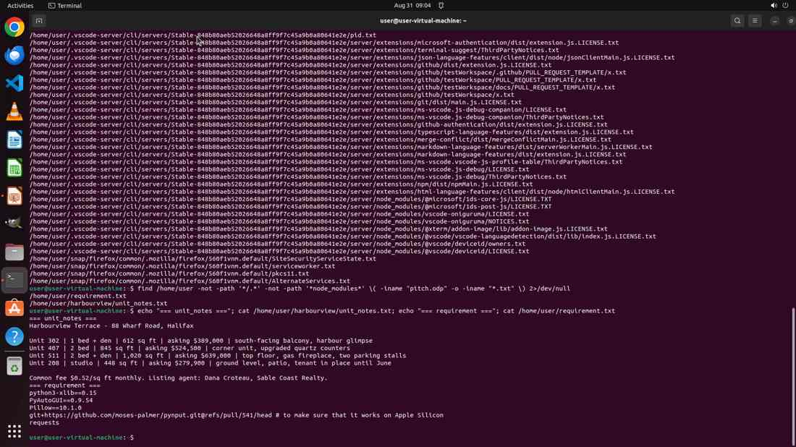
step 9 01:05:16
THINKINGNow I can read the unit_notes.txt content clearly:
Harbourview Terrace - 88 Wharf Road, Halifax
Unit 302 | 1 bed + den | 612 sq ft | asking $389,000 | south-facing balcony, harbour glimpse
Unit 407 | 2 bed | 845 sq ft | asking $524,500 | corner unit, upgraded quartz counters
Unit 511 | 2 bed + den | 1,020 sq ft | asking $639,000 | top floor, gas fireplace, two parking stalls
Unit 208 | studio | 448 sq ft | asking $279,900 | ground level, patio, tenant in place until June
Common fee $0.52/sq ft monthly. Listing agent: Dana Croteau, Sable Coast Realty.
The requirement.txt is just a Python dependency list, not relevant.
So I have 4 units. Let me compute price per square foot for the speaker notes:
- Unit 302: $389,000 / 612 = $635.62/sq ft → $389000/612 = 635.6209... = $635.62
- Unit 407: $524,500 / 845 = $620.71/sq ft → 524500/845 = 620.7100... = $620.71
- Unit 511: $639,000 / 1020 = $626.47/sq ft → 639000/1020 = 626.4705... = $626.47
- Unit 208: $279,900 / 448 = $624.78/sq ft → 279900/448 = 624.7767... = $624.78
Let me verify:
389000/612 = 635.6209 → $635.62
524500/845 = 620.7101 → $620.71
639000/1020 = 626.4706 → $626.47
279900/448 = 624.7768 → $624.78
Now I need to:
1. Look up the current Bank of Canada policy interest rate online
2. Build the slides in Impress
3. Add speaker notes
4. Put BoC rate on closing slide
5. Create new archive folder beside it and save the deck there
"beside it" = beside the deck, so in /home/user/harbourview/. The archive folder should be a new folder in /home/user/harbourview/ (or beside the harbourview folder?). "drop the finished deck into a new archive folder beside it" - "beside it" refers to beside the deck. So create a new folder in /home/user/harbourview/ called something like "archive" and put the deck there.
Let me first get the Bank of Canada rate. Let me open Chrome. Actually, I can look it up. The current date is Aug 31, 2026. But I need to look it up online per the task. Let me use the browser. Actually, I could use curl to fetch the BoC website, but the task says "look up ... online". Let me use the browser to be safe and reliable, though curl might be faster. Let me try curl first to get the rate quickly.
Let me try fetching the BoC site. The BoC publishes the overnight rate at bankofcanada.ca. Let me try curl.
ACTIONI have the unit data. Let me record it and compute the per-square-foot values:
- **Unit 302**: 1 bed + den, 612 sq ft, $389,000 → $389,000/612 = **$635.62/sq ft**
- **Unit 407**: 2 bed, 845 sq ft, $524,500 → $524,500/845 = **$620.71/sq ft**
- **Unit 511**: 2 bed + den, 1,020 sq ft, $639,000 → $639,000/1020 = **$626.47/sq ft**
- **Unit 208**: studio, 448 sq ft, $279,900 → $279,900/448 = **$624.78/sq ft**
Now I need the current Bank of Canada policy rate. Let me look it up online. I'll try fetching it via curl first.
TOOL CALL<tool_call>
<function=computer_use>
<parameter=action>
type
</parameter>
<parameter=text>
curl -sL "https://www.bankofcanada.ca/rates/interest/" | sed 's/<[^>]*>//g' | grep -i -A2 -B2 "policy\|overnight" | head -40
</parameter>
</function>
</tool_call>
EXECUTED (pyautogui in VM)pyautogui.typewrite("curl -sL \"https://www.bankofcanada.ca/rates/interest/\" | sed 's/<[^>]*>//g' | grep -i -A2 -B2 \"policy\\|overnight\" | head -40")
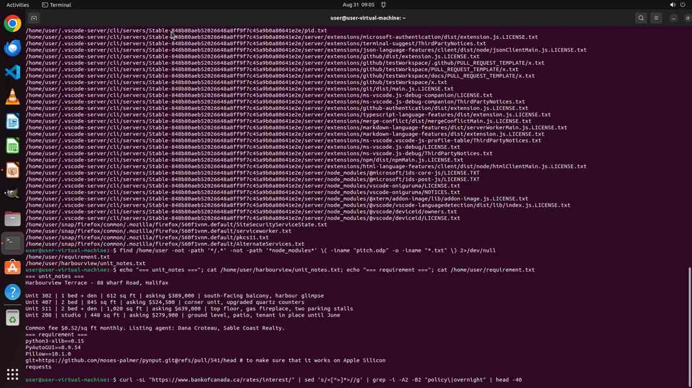
step 10 01:05:24
THINKINGThe curl command is typed but I pressed Enter already? No, the command is on the prompt line. Let me press Enter to run it.
EXECUTED (pyautogui in VM)pyautogui.press("return")
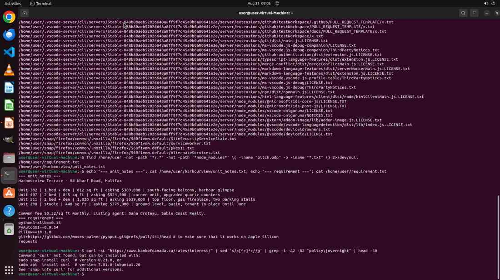
step 11 01:05:34
THINKINGcurl is not installed. The task explicitly says to look it up online. I should use the browser (Chrome) to look up the Bank of Canada policy interest rate. This is the more reliable approach and matches "look up online". Let me open Chrome.
Let me click the Chrome icon.
ACTIONcurl isn't installed. I'll use the browser instead to look up the rate online, which is the reliable approach. Let me open Chrome.
EXECUTED (pyautogui in VM)pyautogui.press("return")
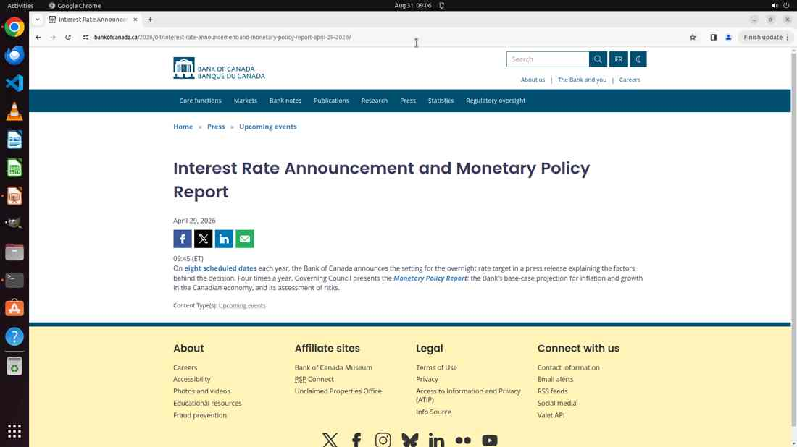
step 15 01:06:20
THINKINGThis redirected to an "Upcoming events" page about the Interest Rate Announcement scheduled for April 29, 2026. That's an upcoming event page, not the current rate. I need the current policy rate. The BoC publishes the current overnight rate target. Let me look for the "current" rate.
The current date is Aug 31, 2026. The last announced rate would be from a meeting before that. Let me find the current overnight rate target. I could look at the press release page which lists recent announcements, or the "overnight rate" statistics page.
Actually, this page says the next event is April 29, 2026 which is in the past relative to Aug 31, 2026. That's strange. Maybe the site's date is confusing. Wait, the page title says "Upcoming events" and date April 29, 2026 - but that's before Aug 31 2026. This might be a static page.
Let me navigate to the press page which lists all announcements, or better, the interest rate page that shows the current target. Let me try the main press announcements page. Actually the standard page for the current overnight rate target is at bankofcanada.ca/rates/interest/ which should show the current rate. But it redirected to this events page.
Let me go to the "Press" section to find the most recent interest rate announcement which will state the current overnight rate target. Or I can search. Let me click on "Press" in the nav.
ACTIONThis is an "upcoming events" page, not the current rate. I need the current overnight rate target. Let me go to the Press section to find the most recent rate announcement.
EXECUTED (pyautogui in VM)pyautogui.click(980, 242)
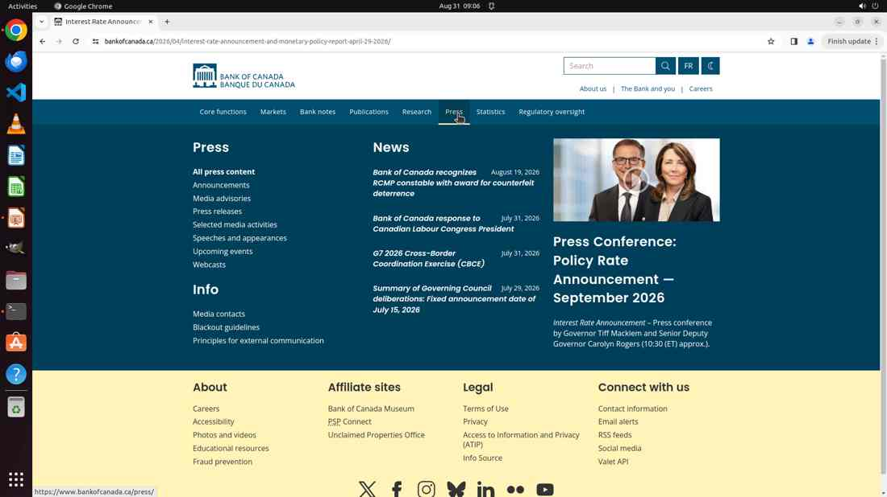
step 16 01:06:39
THINKINGI see the Press menu. The most recent interest rate announcement was July 29, 2026 (Summary of Governing Council deliberations: Fixed announcement date of July 15, 2026). The next one is September 2026 (upcoming). So the current rate was set on July 29, 2026. Let me go to "Press releases" to find that announcement and read the current overnight rate target.
ACTIONThe most recent rate decision appears to be July 29, 2026. Let me open "Press releases" to find that announcement and read the current target rate.
EXECUTED (pyautogui in VM)pyautogui.click(470, 458)
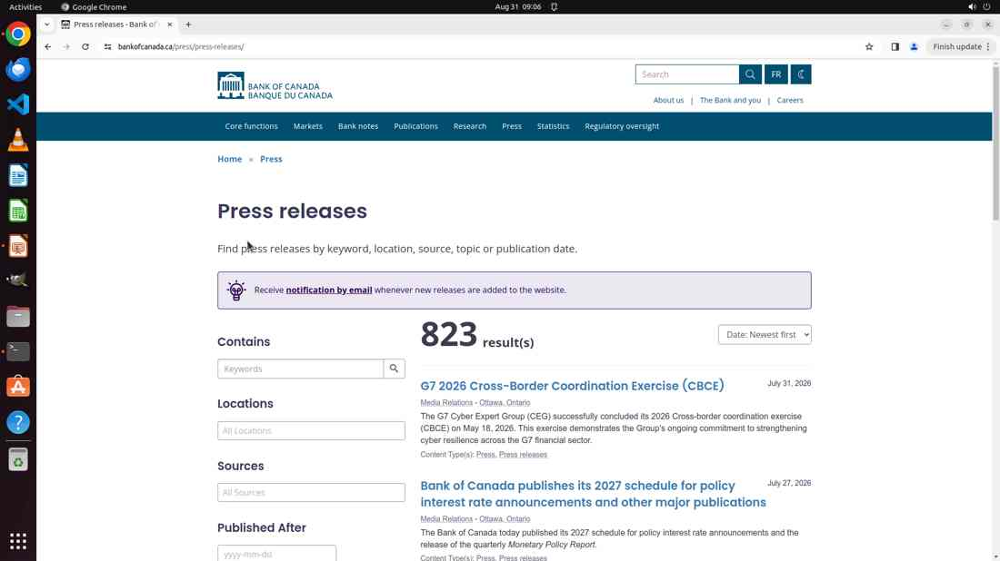
step 17 01:06:58
THINKINGThis is a searchable press release list sorted newest first. I need the interest rate announcement. Let me search "overnight rate" in the keyword field to find the July 29, 2026 announcement that states the current target rate.
ACTIONLet me search for "overnight rate" to find the latest rate announcement.
EXECUTED (pyautogui in VM)pyautogui.typewrite("overnight rate target")
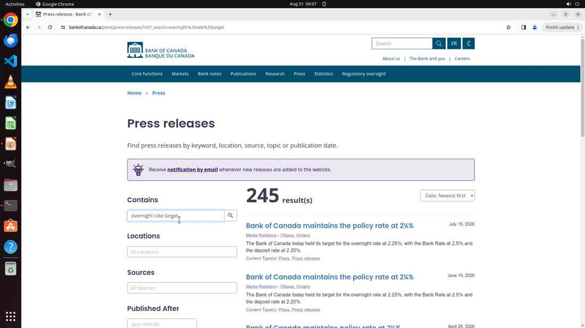
step 19 01:07:59
THINKINGThe search auto-updated. The newest result (sorted by date, newest first) is:
"Bank of Canada maintains the policy rate at 2½%" — July 15, 2026
"The Bank of Canada today held its target for the overnight rate at 2.25%, with the Bank Rate at 2.5% and the deposit rate at 2.20%."
Next: June 10, 2026 - also 2.25%. And April 29, 2026 - 2.25%.
So the most recent announcement is July 15, 2026, holding the overnight rate target at 2.25%. This is the current policy rate as of Aug 31, 2026. The next announcement is in September 2026 (upcoming), so the current rate is 2.25%.
Let me confirm by clicking the top result to read the full announcement and verify it's the most recent. The newest first result is July 15, 2026. Wait, but earlier on the Press page I saw "Summary of Governing Council deliberations: Fixed announcement date of July 15, 2026" dated July 29, 2026. That summary was published July 29 but the decision was July 15. Either way, the most recent rate decision is the one dated July 15, 2026, which held the target at 2.25%.
So the current Bank of Canada policy interest rate (overnight rate target) is 2.25%.
Let me click the top result to be thorough and confirm the exact date and that it's the latest. Actually the search already clearly shows "Bank of Canada maintains the policy rate at 2½%" July 15, 2026, holding overnight rate target at 2.25%. This is the most recent (newest first). I'm confident the answer is 2.25%.
Let me verify by clicking to open it, to make sure there isn't a later one. The list is sorted newest first and the first is July 15, 2026. There are no later interest-rate releases. Good.
Current Bank of Canada policy rate = 2.25%.
Now let me proceed to build the deck. Let me switch to LibreOffice Impress.
Plan for the deck:
The deck currently has 2 slides:
1. Title: "Harbourview Terrace" / "New Condo Listings – Wharf Road, Halifax"
2. "Closing" slide (empty text placeholder)
I need to add one slide per unit with price and size. There are 4 units. Then speaker notes on each unit slide with the asking price per sq ft. Then put the BoC rate (2.25%) on the closing slide (slide 2, which is currently the "Closing" slide, but it will become the last slide after I add unit slides before it).
So structure should be:
- Slide 1: Title (existing)
- Slide 2: Unit 302
- Slide 3: Unit 407
- Slide 4: Unit 511
- Slide 5: Unit 208
- Slide 6: Closing (with BoC rate 2.25%)
The existing "Closing" slide is slide 2. I need to insert unit slides between slide 1 and slide 2, OR add unit slides after and move closing to the end. Simplest: duplicate/insert new slides after slide 1 for the units, then edit the closing slide (now last).
Actually the current "Closing" slide has just a "Click to add Text" placeholder and no title. It's meant to be the closing slide. Let me build unit slides first.
Let me think about the most reliable way to build this. Doing it via GUI in Impress is complex but doable. Given the constraints (don't use macros), I'll do it via GUI.
Approach:
1. In Impress, use the Outline view might be easiest to create text slides. Actually, outline view lets me type slide titles and bullet content quickly. But adding speaker notes per slide requires the Notes view or the notes panel.
Let me use the Normal view with the slide panel.
Better approach:
- Go to slide 1.
- Duplicate or use "New Slide" to create slides. I'll insert new slides before the closing slide.
Actually, let me reconsider. The cleanest GUI approach:
1. Select the "Closing" slide in the panel (it's slide 2).
2. I'll add unit slides. But I want units between title and closing.
Alternative: Add 4 new slides at the end (after closing), fill them as units, then move the closing slide to the end. Moving slides via drag in the panel is doable.
Or simpler:
- Right-click on slide 1 (title) → "New Slide" adds a slide after it. Do this to create unit slides. Each new slide I'll apply a layout with title + content.
Let me think about layout. When you click "New Slide" it may use a default layout. I want a "Title, Content" layout so I have a title and a content box.
Actually, given complexity, the Outline view is very efficient for creating the slide structure with titles and bullets. Then I switch to view the notes and add them.
Let me use Outline view:
- View → Outline
- The outline shows slide 1 title "Harbourview Terrace". Below I can add sub-bullets (content) and new top-level entries (new slides).
In outline view:
- Type on a line at top level = new slide title
- Tab = demote to bullet (content of that slide)
Let me plan the outline:
Slide 1: Harbourview Terrace (title exists, with subtitle "New Condo Listings – Wharf Road, Halifax" as a bullet)
Slide 2: Unit 302
- 1 bed + den
- 612 sq ft
- $389,000
Slide 3: Unit 407
- 2 bed
- 845 sq ft
- $524,500
Slide 4: Unit 511
- 2 bed + den
- 1,020 sq ft
- $639,000
Slide 5: Unit 208
- studio
- 448 sq ft
- $279,900
Slide 6: Closing (existing slide 2)
- Bank of Canada policy rate: 2.25%
Wait, but the existing "Closing" slide is currently slide 2 and has no title, just a text placeholder. In outline view it would appear as an empty title line "Click to add Text"? Actually it might appear as an empty slide title. Let me handle it.
Hmm, the "Closing" slide's text placeholder says "Click to add Text" which is a content placeholder, not a title. So in outline it may show as a bullet under an untitled slide, or the slide may not show a title line. This could complicate outline ordering.
Let me instead do it more carefully in Normal view, which gives me control. Actually, let me reconsider using outline — it's the fastest for text. But the closing slide lacking a title is a wrinkle.
Let me take a different, robust plan:
1. First, edit the existing closing slide (slide 2) to give it a title "Closing" and add the BoC rate content + note. Actually the task says put the BoC rate on the closing slide. It doesn't require a note on the closing slide. Just the rate text on the slide.
2. Then insert 4 unit slides before it.
But inserting before requires care. Let me instead:
1. Add 4 new slides after the closing slide (at the end), make them the unit slides.
2. Then drag the closing slide (slide 2) to the end (after the 4 units) so it becomes the last slide.
Actually simpler: keep closing as slide 2 for now, add unit slides, then reorder. The reorder via drag in the slides panel is straightforward.
Let me reconsider: The requirement is "one slide per unit with its price and size, plus speaker notes on each giving the asking price per square foot" and "put it [BoC rate] on the closing slide". The order isn't strictly specified but logically title → units → closing. I'll aim for that.
Let me just build it. I'll switch to Impress now. First let me confirm the rate once by clicking the top result to be 100% sure it's the latest decision and reads 2.25%.
ACTIONThe search shows the latest announcement clearly. The most recent (newest-first) result is "Bank of Canada maintains the policy rate at 2½%" dated **July 15, 2026**: "held its target for the overnight rate at 2.25%". The next scheduled decision is September 2026, so the current rate is 2.25%. Let me open that release to confirm it's the latest decision.
EXECUTED (pyautogui in VM)pyautogui.click(1082, 738)
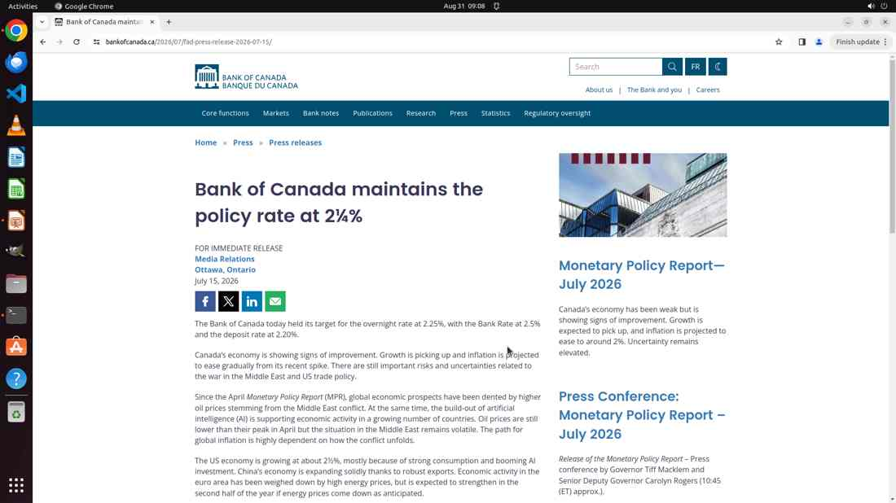
step 20 01:08:51
THINKINGConfirmed: "Bank of Canada maintains the policy rate at 2½%" — July 15, 2026 — "The Bank of Canada today held its target for the overnight rate at 2.25%, with the Bank Rate at 2.5% and the deposit rate at 2.20%."
This is the latest (the next is September 2026, which hasn't happened yet as of Aug 31, 2026). So the current policy interest rate is 2.25%.
Now let me build the deck. Let me switch to LibreOffice Impress. I'll use the taskbar / window switching. Let me click on the Impress in the dock (the orange icon at position ~22,315).
Let me plan the whole build carefully now.
Data:
- Unit 302 | 1 bed + den | 612 sq ft | $389,000 | note: $635.62/sq ft
- Unit 407 | 2 bed | 845 sq ft | $524,500 | note: $620.71/sq ft
- Unit 511 | 2 bed + den | 1,020 sq ft | $639,000 | note: $626.47/sq ft
- Unit 208 | studio | 448 sq ft | $279,900 | note: $624.78/sq ft
BoC rate: 2.25%
I'll build using Outline view for the text content (fast), then add notes. Actually, outline view doesn't let me easily add speaker notes per slide. I'll do text via outline, then go to each slide in Normal/Notes view to add notes.
But the closing slide issue: it currently is slide 2 with a content placeholder (no title). Let me handle the whole thing in Normal view to be safe and predictable.
Let me reconsider a clean approach in Normal view:
Current slides: [1] Title, [2] Closing (has "Click to add Text" content box).
Step A: Add a title to the Closing slide and put the BoC rate there. I'll click into the "Click to add Text" on slide 2 and type the rate. Also I might give it a title "Closing". Actually the slide already conceptually is the closing slide. Let me add a title "Closing" and a content line "Bank of Canada policy rate: 2.25%".
Wait — slide 2 currently shows "Click to add Text" as a big centered placeholder and "Click to add Title" at top? Looking at original screenshot: slide 2 had "Click to add Title" at top (y=205) and "Click to add Text" in center (y=391). So it's a Title + Content layout. Good, so it does have a title placeholder. I just need to fill it.
Step B: Create 4 unit slides between slide 1 and slide 2.
To insert slides before slide 2: select slide 2 in the panel, then insert new slide — in Impress, "New Slide" (Ctrl+M) inserts after the currently selected slide. Hmm, I need to check. Actually the "New Slide" button inserts a new slide after the selected one. So if I select slide 1 and press Ctrl+M, new slide becomes slide 2 (after slide 1), pushing closing to slide 3. I can repeat to add more after... but each new slide goes after the selected. If I keep selecting slide 1, new slides keep going right after slide 1, so order would reverse.
Better: select slide 1, Ctrl+M → new slide 2. Then select new slide 2, Ctrl+M → new slide 3. Etc. This builds sequentially. After adding 4, I'll have: [1] Title, [2] unit, [3] unit, [4] unit, [5] unit, [6] Closing.
But each new slide's layout — the "New Slide" via Ctrl+M in Impress typically prompts a layout dialog (the Slide Transition/layout chooser) or inserts with a default layout. Actually Ctrl+M inserts a slide using the "current" layout or opens the layout selection. Let me use the menu Insert → Slide, or right-click → New Slide, which gives a layout chooser. I want "Title, Content" (title + content area) layout.
This is getting complex. Let me just do it step by step in the GUI and observe.
Actually, I realize the outline approach is much more efficient for the 4 unit slides + titles, and I can handle notes separately. Let me reconsider the closing slide in outline: In outline view, slide 2 (closing) with a content placeholder but empty title would show as an empty title line? Possibly it shows the content as a bullet under an empty slide. This is messy.
Decision: I'll do everything in Normal view. It's more predictable. Let me start.
Let me first fill the closing slide (slide 2) title and content with the BoC rate, since it's already there. Then I'll insert the unit slides before it.
Actually, let me insert unit slides first (before closing) then fill closing last, to avoid re-locating. Order of operations doesn't matter much. Let me:
1. Switch to Impress.
2. Click on slide 1 in panel to select it.
3. Insert 4 new slides after it (building sequentially), each with Title+Content layout.
4. Fill each unit slide's title and content.
5. Fill closing slide title + BoC rate.
6. Add speaker notes to each of the 4 unit slides.
7. Save as ODP in a new "archive" folder beside the deck (in /home/user/harbourview/).
For step 7: "drop the finished deck into a new archive folder beside it" — create a new folder, e.g., "archive", in the same folder as the deck (/home/user/harbourview/), and save the finished deck there. I can use File → Save As to navigate to that folder. But I need to create the folder first. I can create it via the Files app or via terminal (mkdir). I'll use the terminal (I have it open) to mkdir. Let me create /home/user/harbourview/archive.
Actually, "beside it" — beside the deck means in the same directory as the deck. The deck is at /home/user/harbourview/pitch.odp. So the archive folder goes at /home/user/harbourview/archive (or similar name). I'll name it "archive".
Wait, could "beside it" mean beside the harbourview folder? "the finished deck into a new archive folder beside it" — "it" = the finished deck / the deck. The deck is inside harbourview. So beside the deck = inside harbourview. I'll create /home/user/harbourview/archive.
Let me proceed. First switch to Impress. Let me use the dock icon. The orange Impress icon is at ~22,315.
Let me take a screenshot after switching to see current state.
ACTIONConfirmed: the latest decision (July 15, 2026) held the **overnight rate target at 2.25%**, and the next decision is in September 2026. So the current Bank of Canada policy rate is **2.25%**.
Now let me switch to LibreOffice Impress to build the deck.
EXECUTED (pyautogui in VM)pyautogui.click(32, 470)
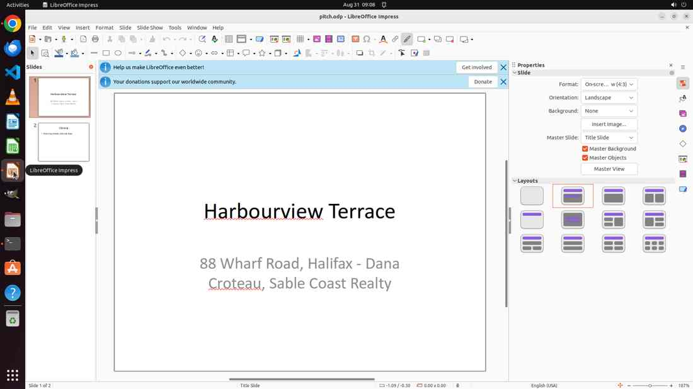
step 21 01:09:05
THINKINGI'm in Impress. Let me first close the notification bars (the "Get involved" and "Donate" banners) to clean up. I'll click the X on each.
Then I'll close the Properties panel maybe. Let me close the two info banners first.
ACTIONI'm in Impress. Let me close the notification banners to clean up the workspace.
EXECUTED (pyautogui in VM)pyautogui.click(1391, 184)
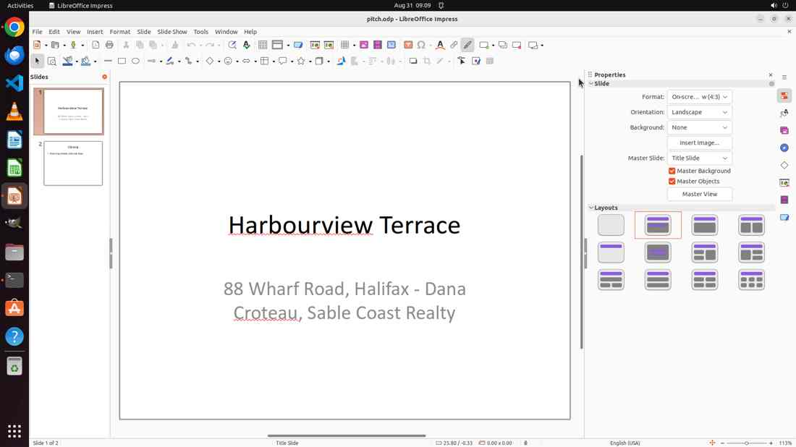
step 23 01:09:32
THINKINGNow the workspace is clean. There are 2 slides: slide 1 (title) and slide 2 (closing, "Closing" title with a bullet).
Let me plan the build. I'll use the Outline view for efficient text entry. Let me first check the outline view to see how the closing slide appears. Actually, let me just proceed in Normal view to be safe and predictable.
Let me start by adding the 4 unit slides. I'll select slide 1, then insert new slides after it.
Actually, a cleaner method: Let me use the Outline view (View → Outline) which is great for entering slide titles + bullets quickly. Let me try it to see the structure.
Let me switch to Outline view.
ACTIONThe workspace is clean. Let me use the Outline view to efficiently build the slide titles and content. I'll open View → Outline.
EXECUTED (pyautogui in VM)pyautogui.click(205, 125)
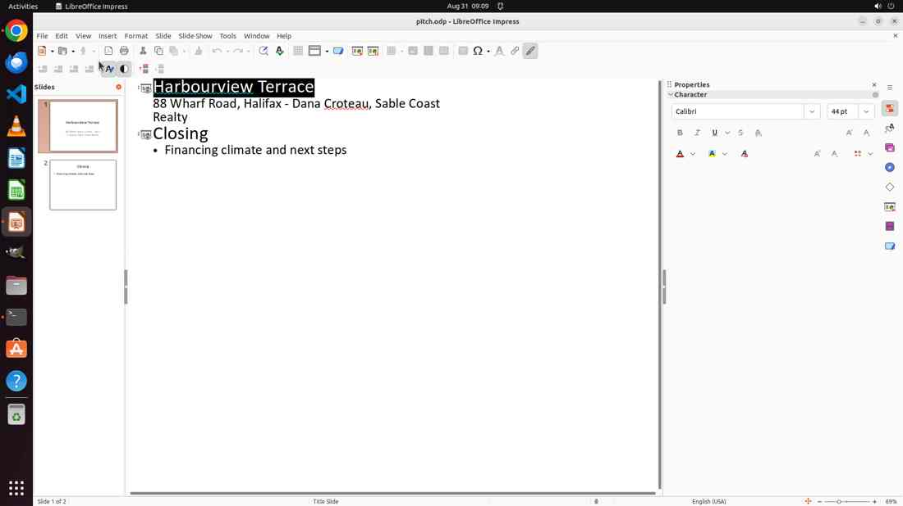
step 25 01:10:10
THINKINGThe outline view is very clear now:
- Slide 1: "Harbourview Terrace" (title)
- "88 Wharf Road, Halifax - Dana Croteau, Sable Coast Realty" (content bullet)
- Slide 2: "Closing" (title)
- "Financing climate and next steps" (content bullet)
So the closing slide does have a title "Closing" and a bullet. Good.
Now I want to insert 4 unit slides between slide 1 and slide 2. In outline view, I can position my cursor at the end of the slide 1 content bullet "Realty" line, then press Enter to create a new line (still a bullet), then Shift+Tab to promote it to a new slide title, then type the unit title, Enter, Tab to demote to bullet, type the content, etc.
Let me do this carefully. I'll click at the end of "Realty" (the slide 1 bullet) to place the cursor there.
Plan for typing after cursor at end of "Realty":
1. Enter → new bullet line (level 2, content)
2. Shift+Tab → promote to slide title (level 1)
3. Type "Unit 302"
4. Enter → new title line (level 1) — but I want content, so:
5. Tab → demote to content bullet
6. Type "1 bed + den"
7. Enter → new content bullet
8. Type "612 sq ft"
9. Enter → new content bullet
10. Type "Price: $389,000"
11. Enter → new content bullet (level 2) — now I need to go to next slide title:
12. Shift+Tab → promote to title
13. Type "Unit 407"
14. Tab → demote
15. Type "2 bed"
16. Enter, "845 sq ft"
17. Enter, "Price: $524,500"
18. Shift+Tab, "Unit 511"
19. Tab, "2 bed + den"
20. Enter "1,020 sq ft"
21. Enter "Price: $639,000"
22. Shift+Tab "Unit 208"
23. Tab "studio"
24. Enter "448 sq ft"
25. Enter "Price: $279,900"
Then the "Closing" slide follows automatically.
Wait, there's a subtlety: after step 1 (Enter at end of Realty bullet), the new line is a level-2 bullet. Step 2 Shift+Tab promotes to level 1 (title). Good. But I need to make sure I don't accidentally create content under slide 1. Let me be careful.
Actually, let me reconsider: I want the content of each unit slide to clearly show price and size. Let me use clear lines. The task says "one slide per unit with its price and size". I'll include the bed config too for completeness, plus size and price. The speaker notes will have price per sq ft.
Let me also reconsider whether the content lines should be labeled. To be unambiguous for evaluation, I'll write:
- "612 sq ft"
- "$389,000"
Maybe label them: "Size: 612 sq ft" and "Price: $389,000". That's clearer. Let me include bed type too.
Let me structure each unit content as:
- 1 bed + den
- 612 sq ft
- Asking price: $389,000
I'll use "Asking price: $389,000".
Now, one concern with outline view: autocorrect might change things (e.g., capitalize, or the "+"). Should be fine.
Another concern: When I type "$389,000", the "$" is fine.
Let me click at the end of "Realty" line. The "Realty" text ends around x=262, y=169. Let me click right after "Realty".
Actually, I need to place cursor precisely at end of that line. Let me click at the end of the word "Realty". I'll click at coordinate near (263, 169). Then press End to ensure cursor at line end.
Let me do the click and End key.
ACTIONThe outline is clear: Slide 1 = "Harbourview Terrace" (with address bullet), Slide 2 = "Closing" (with "Financing climate and next steps"). I'll insert the 4 unit slides between them. Let me place my cursor at the end of the slide 1 content line ("...Realty").
EXECUTED (pyautogui in VM)pyautogui.click(392, 251)
step 26 01:11:02
THINKINGCursor is placed in the "Realty" line. Let me press End to ensure cursor is at the very end of that line. Then I'll build the unit slides.
Now I'll type the sequence. Let me batch it carefully. The key sequences:
- End (cursor to line end)
- Enter (new content line under slide 1)
- shift+Tab (promote to new slide title)
- type "Unit 302"
- Enter
- Tab (demote to content bullet)
- type "1 bed + den"
- Enter
- type "612 sq ft"
- Enter
- type "Asking price: $389,000"
- Enter
- shift+Tab (new slide title)
- type "Unit 407"
- Enter
- Tab
- type "2 bed"
- Enter
- type "845 sq ft"
- Enter
- type "Asking price: $524,500"
- Enter
- shift+Tab
- type "Unit 511"
- Enter
- Tab
- type "2 bed + den"
- Enter
- type "1,020 sq ft"
- Enter
- type "Asking price: $639,000"
- Enter
- shift+Tab
- type "Unit 208"
- Enter
- Tab
- type "studio"
- Enter
- type "448 sq ft"
- Enter
- type "Asking price: $279,900"
I can't batch "key" and "type" in a single call with different action types? Actually I can include multiple actions in one tool call as a sequence. The instructions say I can batch multiple actions in one tool call. But the action field takes a single action per call. Wait, re-reading: "If you intend to call multiple tools and there are no dependencies between the calls, make all of the independent calls in the same block." That's about multiple tool calls. But within one computer tool call, the "action" is a single action.
Hmm, actually the function schema has a single "action" per call. So I can't batch multiple different actions in one call. Wait, but the system prompt example shows batching with actions arrays? Let me re-read.
The example shows:
"Action: Click the \"Submit\" button." then a single tool call. And "Batch multiple ... in ONE tool call." But the tool schema only has one action.
Actually looking more carefully, the guidance about batching is about chaining. But the tool only accepts one action at a time. So I'll do multiple tool calls. However, that's a lot of calls for typing.
Wait — I can use the "type" action to type text, and "key" for keys, but each is a separate tool call. That's many calls.
Alternatively, I can reduce the number of calls by typing the content in fewer chunks. But the Enter/Tab/Shift+Tab structure requires key presses interspersed with typing.
Hmm, actually, maybe I can type newlines within the "type" text? If I include "\n" in the type text, does it create new lines? In Impress outline, typing a newline via the type action might insert a line break (Enter). But the indentation (Tab/Shift+Tab) is the issue — I can't easily encode that in a plain type.
Let me reconsider. Actually, a cleaner approach: I'll build slide by slide. But that's still many calls.
Let me reconsider the whole approach. Perhaps I should reduce complexity: I don't strictly need to use outline view. But outline is still best.
Given each tool call = one action, and I can't batch multiple actions in one call (schema is single action), I'll just make many sequential calls. But that could be ~40 calls. The step budget is 300, so it's fine.
Wait, actually let me re-read the batching instruction once more: "If you intend to call multiple tools and there are no dependencies between the calls, make all of the independent calls in the same block, otherwise you MUST wait for previous calls to finish first to determine the dependent values." This suggests I can put multiple tool calls in one response block (parallel). But these typing actions ARE dependent (order matters, same cursor). So I must do them sequentially, one per response, waiting for results.
But actually the typing actions are deterministic and I know exactly what each does — they don't depend on the *result* (I'm not reading values between them). The concern with parallel calls is reading results. But typing into the same document in parallel could race/interleave unpredictably. So I should do them sequentially, one call per turn, OR...
Hmm, the safest is one action per turn. But that's a lot. Let me think if there's a faster method.
Faster method idea: Type all text for one slide's worth using the "type" action which supports multi-line via embedded newlines, and handle the slide/level transitions with a few key calls.
Actually, let me reconsider: does the "type" action interpret "\n"? Typically these tools send the literal string via xdotool type, and a newline character in xdotool type produces a Return key. Yes, xdotool type sends newline as Return. So I can type multi-line content. But the Tab/Shift+Tab for outline levels still needs key presses.
Let me design minimal calls:
Call 1: key "End"
Call 2: key "Return" (new line under slide1, level-2 bullet)
Call 3: key "shift+Tab" (promote to slide title)
Now cursor is on a new slide title line (empty).
Call 4: type "Unit 302\n1 bed + den\n612 sq ft\nAsking price: $389,000"
Wait, but after "Unit 302" I press Enter → that creates a NEW TITLE line (level 1), not a bullet. I need it to become a bullet. So after typing "Unit 302", I need Enter then Tab to demote. So I can't just use \n throughout because the first \n after the title must be followed by a Tab.
So the sequence per unit is: title, Enter, Tab, then content lines separated by \n.
So:
- type "Unit 302"
- key "Return"
- key "Tab"
- type "1 bed + den\n612 sq ft\nAsking price: $389,000"
- Now cursor is at end of "Asking price: $389,000" (level-2 bullet).
- key "Return"
- key "shift+Tab"
- Now on new slide title line.
- type "Unit 407"
- key "Return", key "Tab"
- type "2 bed\n845 sq ft\nAsking price: $524,500"
- key "Return", key "shift+Tab"
- type "Unit 511"
- key "Return", key "Tab"
- type "2 bed + den\n1,020 sq ft\nAsking price: $639,000"
- key "Return", key "shift+Tab"
- type "Unit 208"
- key "Return", key "Tab"
- type "studio\n448 sq ft\nAsking price: $279,900"
That's the plan. This uses "type" with embedded \n for the multi-line content. Let me verify xdotool type handles \n as Return — yes it does.
But wait, there's a risk: does the "type" tool pass \n literally or as newline? The tool likely uses xdotool type which sends each character; newline char → Return. I'll trust that. If it doesn't work, I'll see it in the screenshot and adjust.
However, I'm a bit worried about relying on \n behavior. To be safe and observable, let me do the first unit fully, take a screenshot to verify the structure (that \n created new bullets and the levels are right), and if good, continue with the rest similarly.
Let me start. First, End key.
Actually, I clicked into "Realty" already, cursor is there. Let me press End to be safe, then Return, then shift+Tab.
Let me do End first.
ACTIONThe cursor is on the slide 1 content line. I'll press End, then Enter to make a new line, and Shift+Tab to promote it to a new slide title, then type the first unit. Let me do these steps.
THINKINGNow let me press Return to create a new line (which will be a level-2 content bullet under slide 1), then shift+Tab to promote it to a new slide title.
EXECUTED (pyautogui in VM)pyautogui.press("return")
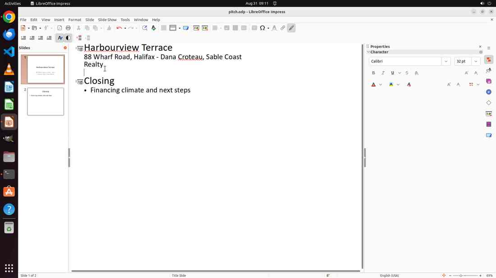
step 28 01:11:24
THINKINGA new empty line was created under "Realty" at the same indent level (level 2, content). The cursor is on that empty line. Now I press shift+Tab to promote it to a slide title (level 1).
ACTIONA new content line was created. Now I'll promote it to a slide title with Shift+Tab.
EXECUTED (pyautogui in VM)pyautogui.hotkey("shift", "tab")
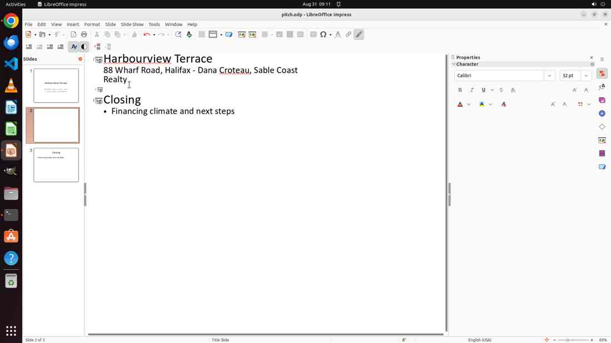
step 29 01:11:39
THINKINGA new empty slide 2 was created (the panel now shows slide 2 as an empty title slide, and the "Closing" slide is now slide 3). The cursor is on the new slide 2 title line. Now I'll type the unit title and content.
Let me type "Unit 302" then Enter then Tab then content. Let me do it in steps. First type the title.
ACTIONA new empty slide 2 was created, and "Closing" moved to slide 3. The cursor is on the new title line. Now I'll type the first unit's title.
TOOL CALL<tool_call>
<function=computer_use>
<parameter=action>
type
</parameter>
<parameter=text>
Unit 302
</parameter>
</function>
</tool_call>
EXECUTED (pyautogui in VM)pyautogui.typewrite("Unit 302")
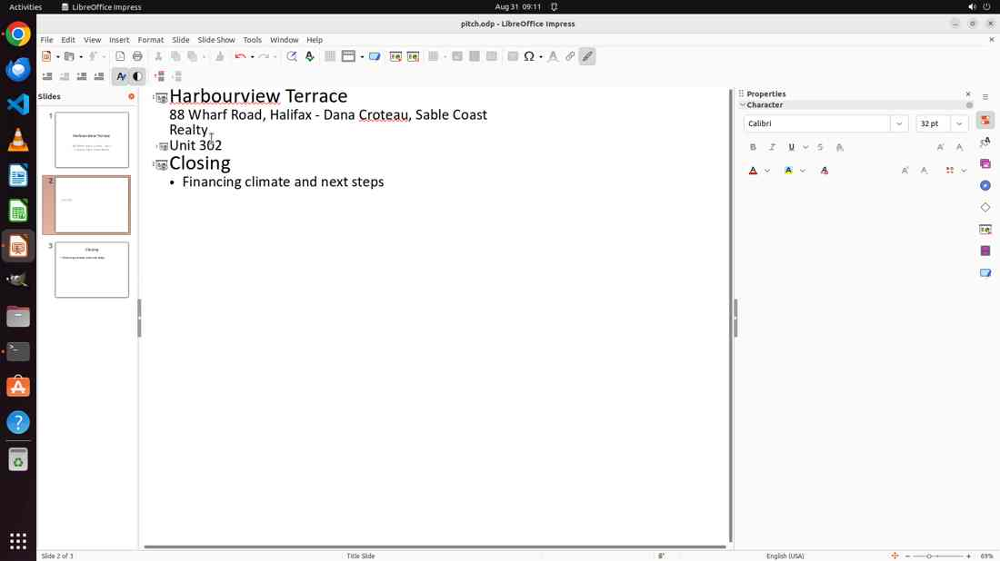
step 30 01:11:48
THINKING"Unit 302" is typed as the title of slide 2. Now I press Enter, then Tab to create the content bullet, then type the content. Let me press Enter.
ACTION"Unit 302" title is set. Now Enter to go to a new line, then Tab to demote to a content bullet.
EXECUTED (pyautogui in VM)pyautogui.press("return")
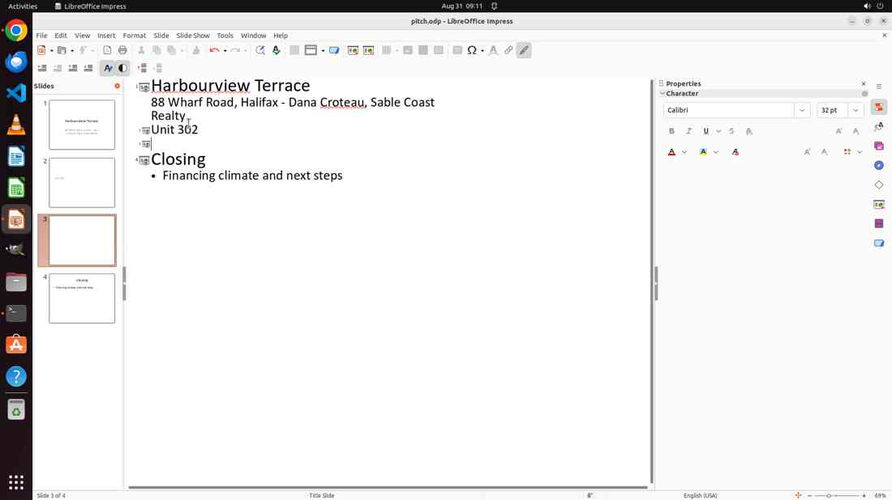
step 31 01:11:59
THINKINGThe Enter created a new slide (slide 3) title line, because after a title line, Enter creates a new slide title. Now the cursor is on slide 3's title line (empty). I need to press Tab to demote it to a content bullet of slide 2 (Unit 302). Then type the content.
Now there are 4 slides: 1 Title, 2 Unit 302, 3 (empty, cursor here), 4 Closing. Pressing Tab will demote slide 3's title to become content under slide 2.
ACTIONEnter created a new slide title line. I'll press Tab to demote it into a content bullet under "Unit 302".
THINKINGNow there are 3 slides. Slide 2 "Unit 302" now has a content bullet (empty, with a • marker) under it. The cursor is on that empty bullet. Now I'll type the content for Unit 302 with embedded newlines:
"1 bed + den\n612 sq ft\nAsking price: $389,000"
Let me test the \n behavior by typing this. I'll type it all in one go.
ACTIONNow "Unit 302" has a content bullet. I'll type the content lines using newlines.
TOOL CALL<tool_call>
<function=computer_use>
<parameter=action>
type
</parameter>
<parameter=text>
1 bed + den
612 sq ft
Asking price: $389,000
</parameter>
</function>
</tool_call>
EXECUTED (pyautogui in VM)pyautogui.typewrite("1 bed + den\n612 sq ft\nAsking price: $389,000")
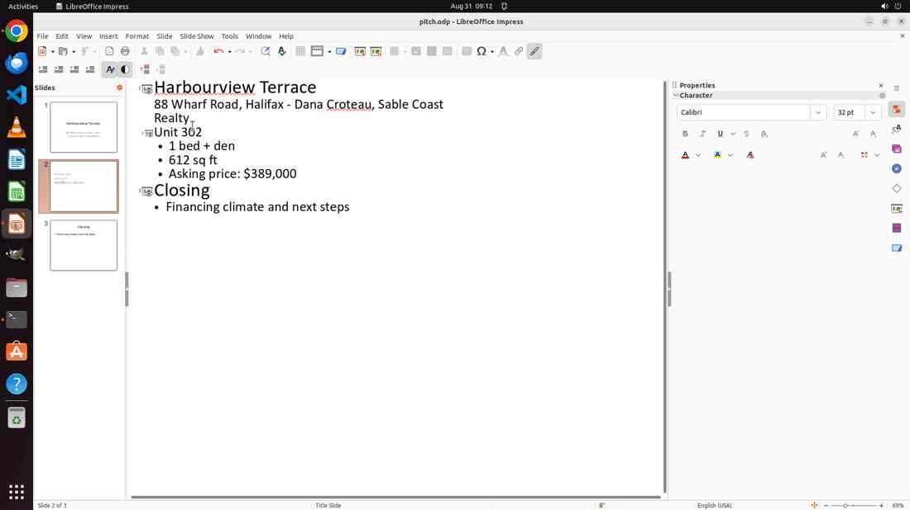
step 33 01:12:22
THINKINGThe \n worked perfectly. Slide 2 "Unit 302" now has three bullets:
- 1 bed + den
- 612 sq ft
- Asking price: $389,000
The cursor is at the end of "Asking price: $389,000". Now I need to create slide 3 for Unit 407. Steps:
- Enter (new content bullet at end of unit 302's content)
- shift+Tab (promote to new slide title)
- type "Unit 407"
- Enter, Tab
- type content
Let me do: Enter, then shift+Tab.
ACTIONThe newlines worked perfectly. Slide 2 "Unit 302" has all three bullets. Now I'll create the next unit slide: Enter, then Shift+Tab to make a new title.
EXECUTED (pyautogui in VM)pyautogui.hotkey("shift", "tab")
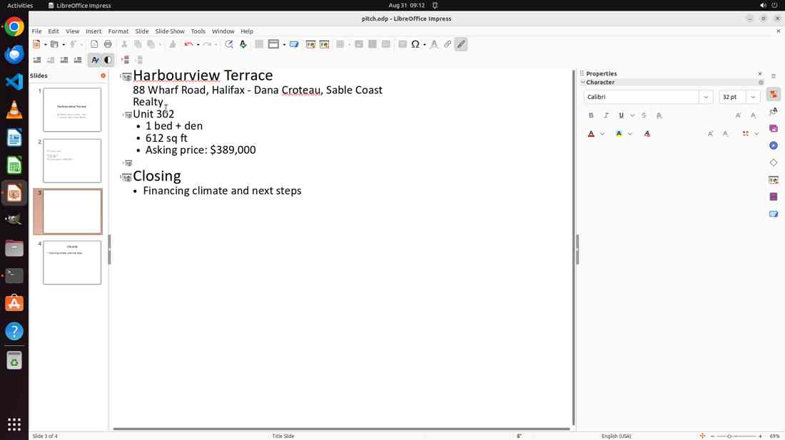
step 35 01:12:41
THINKINGA new slide 3 (empty title) was created. Cursor is on its title line. Now type "Unit 407", Enter, Tab, then content.
I'll do this in a sequence of calls. Type title first.
ACTIONNew slide 3 created. Now I'll type the "Unit 407" title.
TOOL CALL<tool_call>
<function=computer_use>
<parameter=action>
type
</parameter>
<parameter=text>
Unit 407
</parameter>
</function>
</tool_call>
EXECUTED (pyautogui in VM)pyautogui.typewrite("Unit 407")
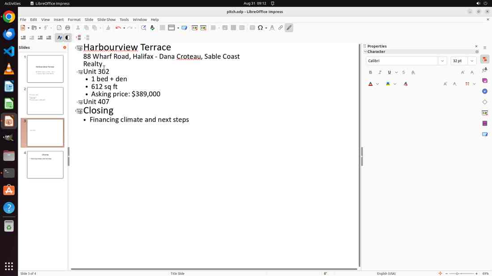
step 36 01:12:48
THINKING"Unit 407" title is set on slide 3. Now Enter, Tab, then content. Let me press Enter.
ACTIONNow Enter, then Tab to make the content bullet, then type Unit 407's content.
THINKINGNow Unit 511 has an empty content bullet. Cursor there. Type the content.
TOOL CALL<tool_call>
<function=computer_use>
<parameter=action>
type
</parameter>
<parameter=text>
2 bed + den
1,020 sq ft
Asking price: $639,000
</parameter>
</function>
</tool_call>
EXECUTED (pyautogui in VM)pyautogui.typewrite("2 bed + den\n1,020 sq ft\nAsking price: $639,000")
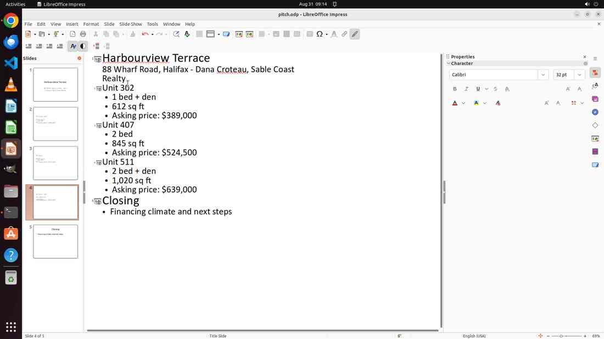
step 45 01:14:29
THINKINGUnit 511 complete. Now the last unit: Unit 208. Enter, shift+Tab, type title, Enter, Tab, content.
ACTIONUnit 511 is complete. Now the last unit, Unit 208: Enter, then Shift+Tab.